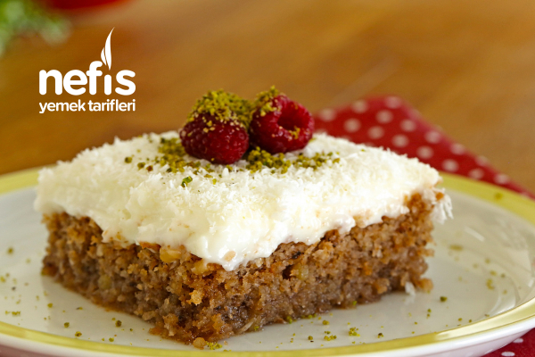

Kıbrıs Tatlısı
Kıbrıs Tatlısı Tarifi Videosu İçin Malzemeler
- 3 adet yumurta
- Yarım su bardağı şeker
- Yarım su bardağı sıvı yağ
- 1 su bardağı galeta unu
- 1 su bardağı kırılmış ceviz
- 1 su bardağı Hindistan cevizi
- 1 paket kabartma tozu
Kreması İçin;
- 1 litre süt
- 1 su bardağı nişasta
- Yarım su bardağı şeker
- 1 paket vanilya
- 1 paket krem şanti
Şerbeti İçin;
- 2 su bardağı su
- 1,5 su bardağı şeker
- 1 paket vanilya
Kıbrıs tatlısı püf noktaları
- Şerbet soğuk kullanılacağı için tatlınızı yapmaya ilk olarak şerbetinden başlamalı ve soğumaya bırakmalısınız.
- Kek harcı için kullanacağınız malzemelerin oda sıcaklığında olması kekinizi olumlu yönde etkileyecektir.
- Şeker ve yumurtaları köpürene kadar güzel bir şekilde çırpmalısınız.
- Galeta unu kullanılacağı için koyu bir kıvam olacaktır bu sizi korkutmasın.
- Kek fırından çıktıktan 2-3 dakika sonra üzerine soğumuş olan şerbetinizi dökmelisiniz.
- Toz krem şantiyi kremayı ocaktan aldıktan sonra beklemeden ekleyebilirsiniz. Ancak güzel bir şekilde çırpmalı ve topaklanmasını engellemelisiniz.
- Tatlınızı buzdolabında dinlendirdikten sonra servis ederseniz daha lezzetli olacaktır.